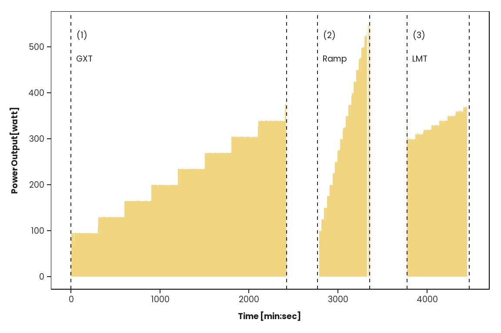

Near-infrared spectroscopy allows to investigate muscle oxygenation non-invasively. The technology has been proposed to complement traditional measures in endurance performance testing by providing insights into peripheral changes. However, there is a lack of longitudinal studies investigating how peripheral muscle oxygen saturation (SmO2) changes with improving fitness and endurance performance. The lack of longitudinal data over long periods such as single or multiple seasons in well-trained athletes is understandable as training interventions are difficult to conduct on sufficiently large samples of competitive athletes. For these instances where data collection is not feasible or even impossible, well-conducted case reports provide unique value to better understand the phenomena of interest (ref).
Here, the SmO2 response of a youth development cyclist during a laboratory based performance test is presented over a period of more than 2 years.
Athlete Characteristics
The athlete in this case study is male and was 18 years old at the first test performed in August 2023 and just started training seriously for road cycling in that year. His previous sporting background was in edit before he started cycling at age 16 for fun. Because of his good performances, the athlete quickly became motivated to pursue the sport more seriously.
General athlete charcteristics are presented in Table 1. The athlete performed the same laboratory performance test 4 times over a period of 4 years (for details read “Methods”). Traditional performance measures over the investigation period are summarized in Table 2.
Table 1: General athlete characteristics
Value
Sex
Male
Height [cm]
178
Start cycling [year]
Table 2: Athlete Characteristics over the period of 3 years
# To start the analysis, the data files are loaded.# load GXT data amd renamaeGXT_Data <-rbind(data.frame(read.csv("Test_2023_08_15.csv"), Test ="23_08"),data.frame(read.csv("Test_2023_11_11.csv"), Test ="23_11"),data.frame(read.csv("Test_2024_05_01.csv"), Test ="24_05"),data.frame(read.csv("Test_2025_10_25.csv"), Test ="25_10") ) |>rename(Time = secs,Cadence = cad,HR = hr,Power = watts,SmO2 = smo2,tHb = thb ) |>select(Time, Cadence, HR,Power, SmO2, tHb, Test)# apply smoothing with mNIRSGXT_Data_clean <-data.frame()for (i in1:4) {GXT_Data |>filter(Test ==unique(Test)[i]) |> mnirs::create_mnirs_data(nirs_device ="Moxy",nirs_channels ="SmO2",time_channel ="Time",sample_rate =2 ) |> mnirs::filter_mnirs(sample_rate =1,method ="smooth_spline",spar =0.05 ) |>rbind(GXT_Data_clean) -> GXT_Data_clean}# Ramp Data preparationRamp_Data <-rbind(data.frame(read.csv("Ramp_2023_08_15.csv"), Test ="23_08"),data.frame(read.csv("Ramp_2023_11_11.csv"), Test ="23_11"),data.frame(read.csv("Ramp_2024_05_01.csv"), Test ="24_05"),data.frame(read.csv("Ramp_2025_10_25.csv"), Test ="25_10") ) |>rename(Time = secs,Cadence = cad,HR = hr,Power = watts,SmO2 = smo2,tHb = thb ) |>select(Time, Cadence, HR,Power, SmO2, tHb, Test)# apply smoothing with mNIRS, then filter with Time >300sRamp_Data_clean <-data.frame()for (i in1:4) {Ramp_Data |>filter(Test ==unique(Test)[i]) |> mnirs::create_mnirs_data(nirs_device ="Moxy",nirs_channels ="SmO2",time_channel ="Time",sample_rate =2 ) |> mnirs::filter_mnirs(sample_rate =1,method ="smooth_spline",spar =0.05 ) |>group_by(Test) |>filter(Time >300) |>mutate(Time = Time -300) |>ungroup() |>rbind(Ramp_Data_clean) -> Ramp_Data_clean}# load LMT data amd renamaeLMT_Data <-rbind(data.frame(read.csv("LMT_2023_08_15.csv"), Test ="23_08"),data.frame(read.csv("LMT_2023_11_11.csv"), Test ="23_11"),data.frame(read.csv("LMT_2024_05_01.csv"), Test ="24_05"),data.frame(read.csv("LMT_2025_10_25.csv"), Test ="25_10") ) |>rename(Time = secs,Cadence = cad,HR = hr,Power = watts,SmO2 = smo2,tHb = thb ) |>select(Time, Cadence, HR,Power, SmO2, tHb, Test)# apply smoothing with mNIRSLMT_Data_clean <-data.frame()for (i in1:4) {LMT_Data |>filter(Test ==unique(Test)[i]) |> mnirs::create_mnirs_data(nirs_device ="Moxy",nirs_channels ="SmO2",time_channel ="Time",sample_rate =2 ) |> mnirs::filter_mnirs(sample_rate =1,method ="smooth_spline",spar =0.05 ) |>rbind(LMT_Data_clean) -> LMT_Data_clean}
Procedures
A single visit protocol with 3 separate tests was performed. At arrival, body mass and body fat percentage using the 10-skinfold method ref were assessed and the NIRS probe placed on the vastus lateralis (VL). The athletes own bike was mounted on an indoor bike trainer (Kickr Core, Wahoo, …*) that was regularly calibrated. Then, the exercise test began, which is presented in Figure 1.
Graded Exercise Test
The submaximal graded exercise test (GXT) commenced, starting at 95 W with an increase of 35 W every 5 minutes. Lactate was sampled at the end of each stage. The test was terminated when the expected maximal lactate steady-state (MLSS) was reached, operationalized by a blood lactate concentration [BLa] \(\geq\) 4 mmol/L. The main goal of the GXT was to create the submaximal [BLa] profile and to identify the first lactate threshold (LT1).
Ramp Test
After a rest period of a few minutes the athlete started cycling at 50 W for 5 minutes as recovery. Following one-minute of passive rest, the ramp protocol started at 100 W and increased by 25 W every 30 s. The goal of the test was to establish the peak power output (PPO) and estimate the maximal oxygen uptake (e\(\dot{\text{V}}\text{O}_{2\text{max}}\)), hence the steep increase.
Lactate Minimum Test
To obtain a physiology-based estimate of the MLSS (eMLSS), the modified lactate minimum test (mLMT, ref) was performed. Following the ramp test, the athlete was asked to sit passively on a chair for exactly 7 minutes for lactate to evenly distribute across the whole body. Then, the mLMT commenced at 40 W below the expected maximal lactate steady state and increased by 10 W every 90 s. Lactate was sampled at the end of each state. The test was terminated when the athlete reached voluntary exhaustion or when [BLa] rose for two consecutive stages, whichever occurred first.
Code
# to visualize the data from all tests in one figure, combine the data from the # GXT, Ramp and LMT from the same Test into one data frame. # Adjust the Time variablesend_GXT <-as.numeric(GXT_Data_clean |>filter(Test =="25_10"& Power >10) |>summarize(Time =max(Time)))end_Ramp <-as.numeric(end_GXT +300+ Ramp_Data_clean |>filter(Test =="25_10"& Power >10) |>summarize(Time =max(Time)))protocol_data <- GXT_Data_clean |>filter(Test =="25_10") |>bind_rows( Ramp_Data_clean |>filter(Test =="25_10") |>mutate(Time = Time + end_GXT +300,Power =ifelse(Power >90, Power, 0)), LMT_Data_clean |>filter(Test =="25_10") |>mutate(Time = Time + end_Ramp +420,Power =ifelse(Power >200, Power, 0)) ) |>mutate(Time =as.duration(Time))end_Total <-max(protocol_data$Time)protocol_data |>ggplot(aes(Time, Power)) +geom_ribbon(aes(ymin =0, ymax = Power), fill = clrs[5], alpha = .5) +geom_vline(xintercept =c(0, end_GXT, end_GXT +345 ,end_Ramp, end_Ramp+420, end_Total), linetype ="dashed") +annotate(geom ="text",x =c(0+60, end_GXT +345+60, end_Ramp +420+60),y =500,label =c("(1) \nGXT","(2) \nRamp","(3) \nLMT"),hjust =0 ) +scale_y_continuous(limits =c(0,550), breaks =seq(0,500,100)) +labs(x ="Time [min:sec]",y ="Power Output [watt]" )
Figure 1: Design of the testing session. After the GXT (1), a ramp test (2) is performed. Following 7 minutes of passive rest, the LMT is started (3)

Measures
Lactate profile and threshold determination
[BLa] was sampled from the earlobe using a portable anaylzer (Lactate plus, …). LT1 was determined using the LTratio method ref. eMLSS is determined as power output at the mathematically derived minimum of the 3rd order polynomial fitted to the eLMT [BLa] data.
e\(\dot{\text{V}}\text{O}_{2\text{max}}\)
Because access to a CPET system was not available, expired gases and \(\dot{\text{V}}\text{O}_2\) could not be directly measured. Therefore, e\(\dot{\text{V}}\text{O}_{2\text{max}}\) was calculated from PPO using a linear regression equation. As this value is only an estimate, PPO is reported as well.
Muscle Oxygenation
A wireless and wearable NIRS device (Moxy Monitor, …) was placed on the right VL, approximately halfway between the trochanter major and the lateral patella. The device recorded at a sampling rate of 0.5 Hz with 10-second smoothing. The data was recorded using GoldenCheetah software (ref), which was used to control the indoor trainer in ergometer mode.
Data Processing
The SmO2 data are exported from Golden Cheetah as .csv file for further processing using R software (ref). Raw signals are pre-processed using {mnirs} package (ref). Specifically, a smoothed spline (with spar = 0.05) was applied. No normalization of the data was applied as SmO2 during the first GXT stage was highly similar over time.
GXT SmO2 response
Average SmO2 for each stage was computed as mean. The rate of change in SmO2 (SmO2rate) is determined after excluding the initial 60 s and last 10s of each stage. A first SmO2 breakpoint (BP1) was identified visually as the first sudden change in SmO2 in 1) the raw data, 2) the avergaged SmO2 and 3) in SmO2slope. This was done using a 3-panel plot (Fig X). For raw data, the power was interpolated from the relative completion of the stage.
Ramp SmO2 response
w
LMT SmO2 response
w
SmO2 response over Time
The full raw data are displayed in Figure 2. Because including all 4 tests make the figures difficult to read, from now on only one test per year will be displayed